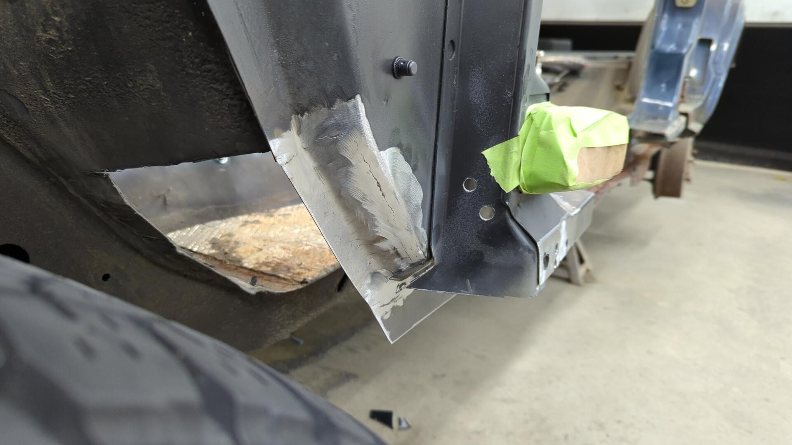
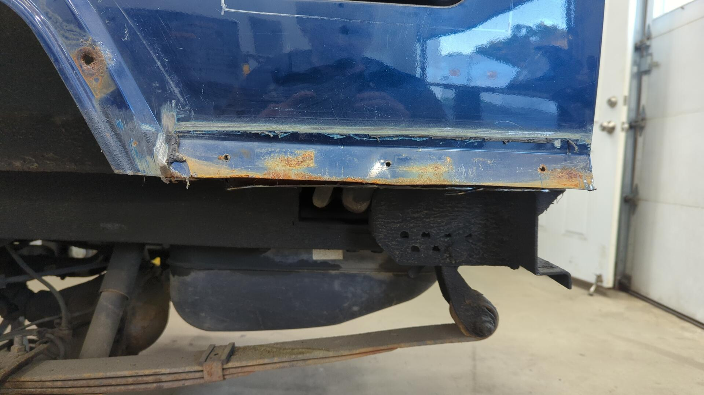
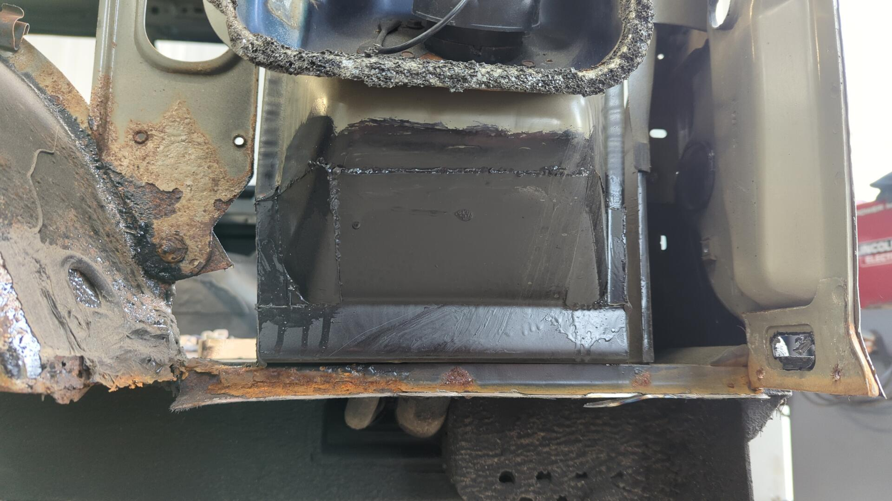
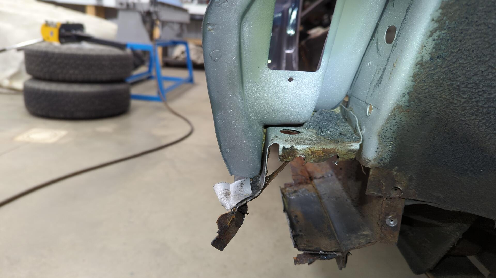
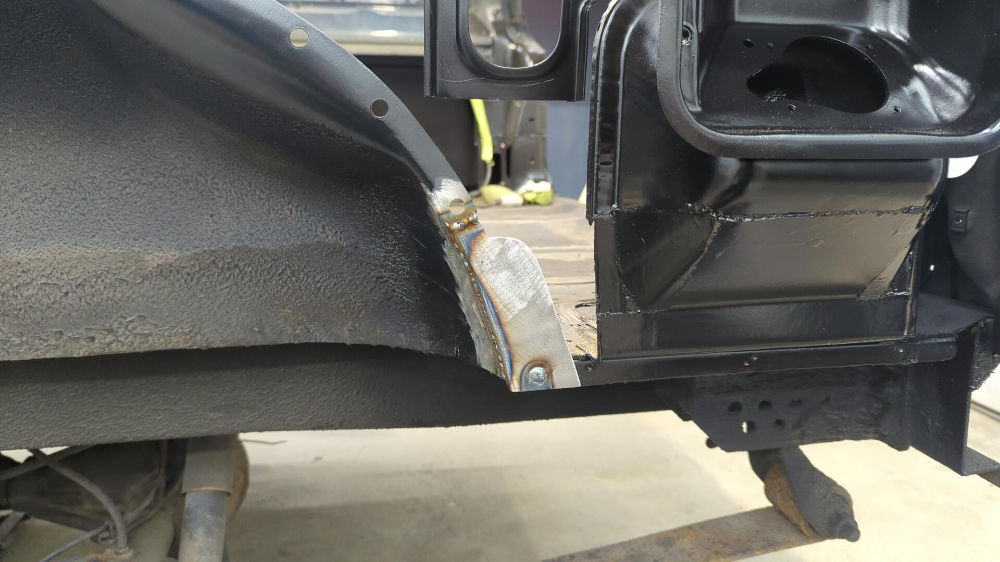
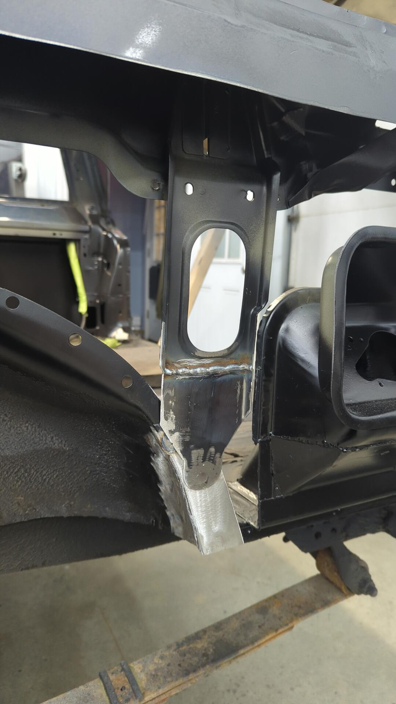
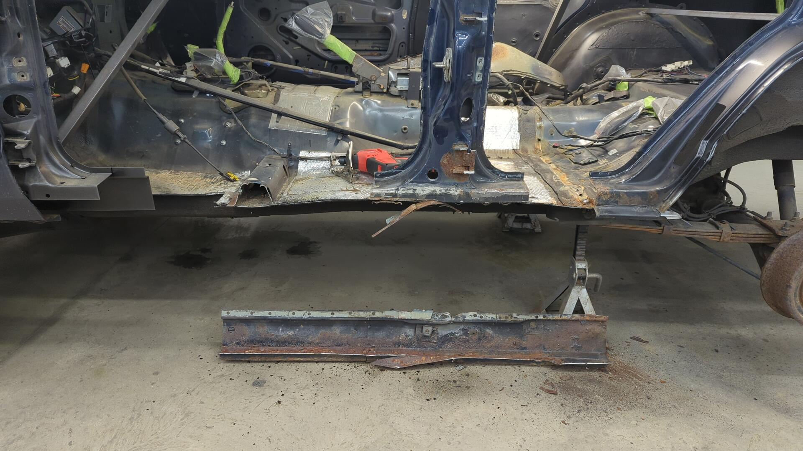
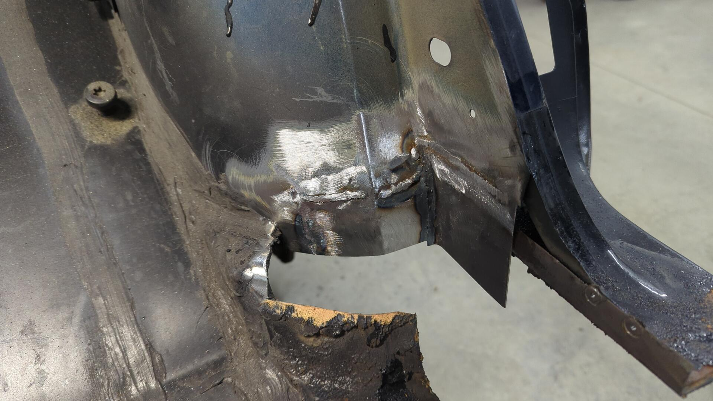
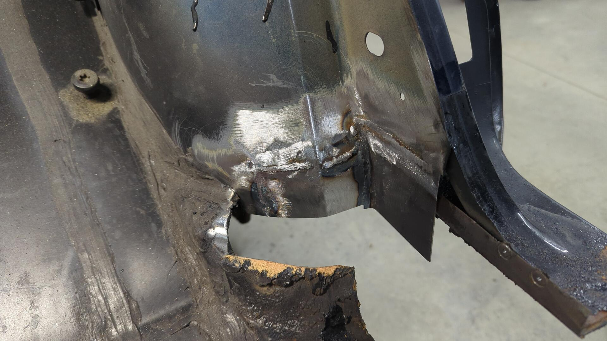

Rust Repair Part 19: Salvaging What I Can of the Driver Side
There’s a lot of rust on the driver side of my XJ, but it’s not as bad as the passenger side used to be. Back when I first began on phase 2 of the rust repair, I purposely started on the passenger side as I thought it’d be the easier of the two sides, but it turns out that wasn’t the case.

Underneath the paint on the rocker is a bunch of rust. It hasn’t fully taken over the entire rocker yet, but it’s definitely made itself at home in all of the seams.
The first piece I removed was the floor brace below where the rear seat goes. The hidden bolt on the right was so stuck I wasn’t able to remove it even after soaking it in PB blaster.
I also remembered to weld a brace on the B pillar before cutting out the rocker panel this time. I took some measurements of the pillars position so I could double check my work later on.

The backside of the inner rocker doesn’t look great. Lots of rust creeping out from all the holes.
Out of curiosity I cut a chunk of the outer rocker off so I could peek at the inside.
Not too terrible. The metal is pretty rusted but still solid.
You can see the seam where I welded my new outer rockers on several years ago.

With a few more cuts via the angle grinder the rest of the rocker was removed.
More remnants of my beginner welds from years ago lol.

Starting With the A Pillar
The hard part about replacing the inner rockers is that if the inner rocker rusted out, there’s a good chance the portions of the body that touch the inner rocker are also gonna be rusted out. In my case this meant I had to replace part of the lower A pillar, and also the corner of the rear wheel well before I could weld in the new inner rocker.
Since the A pillar was the easier of the two, I decided to start with that.

Cutting out part of the floor makes it easier to work on the backside of the pillar.

Since the pillar on this side wasn’t nearly as bad as the passenger side I figured I could sandblast the metal since I’d be keeping most of it.
After that I welded in a new lower patch.
It took me 3 tries to make the patch. The first one had the upper bends too shallow, the second one was just right measurement wise but I accidentally bent it backwards so it would have fit the passenger side. The third one (left most in the picture) ended up being perfect.
Then the metal that was too rusty to salvage was cut off so it could be replaced.

My metal brake is tuned pretty tight right now so the bends are crisper than the OEM ones but I’m not too concerned about matching the OEM design since it’ll be hidden behind the doors.
One last patch was made to replace the metal in front of the pillar.


And just like that, the A pillar was all taken care of. This ended up being significantly less work than the A pillar on the passenger side.

Tearing Into the Rear Quarter
I ended up getting a little sidetracked at this point in the project. In order to get access to this end of the rocker panel I needed to remove the dog leg portion of the rear quarter, and also the inner wheel well. But it felt silly to cut part of the quarter panel skin off since I needed to remove all of it.
I figured my best bet would be to pause on the rocker and take care of the quarter panel because by the time I finished that, I’d have already removed all the metal in the way of the inner / outer rocker.

First up was removing my custom cut-n-fold patch panel. It was held in place by 3 bolts, some seam sealer, and several spot welds.

From the outside it doesn’t look too bad, but the inside was a different story. 
Everything rusted out in just 2 years. It was next to impossible to stop the leaks which meant water pooled up in the panel and slowly rusted everything. I regret doing this mod, but I really had no other choice at the time.

Back when the Jeep was on the road I left my rear interior removed for about a year and would dry out the quarters whenever possible but it didn’t do much other than slow the rust down a bit.
You can see the water line based on the rust stain it left.
Patch panel not looking great. Thankfully I made them from 16ga steel so they hadn’t rusted through.
With the patch panel removed, next up was addressing the fuel neck area. There’s only 4 spot welds and some adhesive mating the quarter panel to the filler area so it was pretty easy to remove with the die grinder and a heat gun to soften the adhesive.

From there the quarter panel skin was ready to be removed. I couldn’t find the spot welds on the back seam so I used the grinder to grind down the edge of the panel until it split. It’s a neat trick I learned when re-skinning the lower halves of the new doors.

Rust everywhere.

The outer half of the inner wheel well was toast.

The bottom of the fuel neck housing was holding up good though! That’s my handy work from 2 years ago. I never had access to grind the welds on the backside which is why they look a little rough.
They’re not leaking though because I seam sealed them on the inside of the fuel neck passage. 
Outer half of the wheel well removed.
There’s a little bit of rust on the inner half but I think I can sandblast it.

The backside of the C pillar by the rocker doesn’t actually look that bad. I think I can salvage most of it. This is great news because on the passenger side I had to rebuild it from scratch and it took me close to 20 hours from start to finish.

Dropping the Gas Tank
Before going any further I opted to drop the gas tank since I needed to do a bunch of grinding around the rubber fuel neck hoses and I didn’t want to find out what would happen if I accidentally cut into them.
Dropping the gas tank wasn’t really that hard, and it gave me a chance to look over the rust repair I did back here a couple years ago. Everything is still holding up great. There’s a couple small spots of rust that I’d like to address soon but nothing concerning.
The paint looks glossy in some areas and dusty in other areas because it’s covered in fluid film. The fluid film tends to trap dust and builds up this thick layer which is why it looks brownish. The epoxy primer underneath is still perfect.

There’s a bit of rust coming out from behind the brackets that mate the frame rails to the rear crossmember, and I plan to replace them soon. I’ve never been happy with the design of those brackets because I feel like I overcomplicated them by bending up 16ga when I should have just used some 1/8" angle.
I’m not really seeing any rust on the passenger side other than the exhaust lol.
Even everything inside of the fuel neck passage area looks great. Each year when I fluid film my Jeep in the fall I like to spray a ton up in there because I know it’s the perfect spot for rust.
Cutting Out the Rust
With the gas tank out of the way I felt comfortable breaking out the grinder so I could start removing rusted metal.
I opted to start by cutting off the lower portion of the spare tire bracket since it was toast.

I tried cleaning up the floor with the die grinder but I couldn’t quite get all the rust due to some pits that formed.


Some of the brackets inside of the upper portion of the quarter panel were showing signs of rust creeping out from behind them too.
The inner bracing where the hatch support mounts was looking really rough.
Drilling out the spot welds revealed more rust than I expected.


No Choice But to Sandblast
Not wanting to miss any rust while I had the chance to properly address I figured it’d be best if I bite the bullet and sandblast everything. I’m trying to avoid sandblasting as much as possible because the Jeep is inside my garage and it makes a royal mess but there’s no better option I’m aware of.
I forgot to snap a picture but I drilled out the spot welds on this bracket so I could sandblast between the layers. This pic was taken after I welded it back together.

The backside where the hatch strut mounts looks way better now.

The inner wheel well even cleaned up nicely too.

I was super pumped to see how well the C pillar cleaned up. Not having to rebuild it saves me a ton of time.


While the blaster was out I cleaned up some pieces of the front door hinges that I had been meaning to address for awhile.

Fresh Epoxy To Protect Everything
Painting everything is always my favorite step of the process. It just makes everything look instantly better.


Starting the Reconstruction
The first piece I welded back on was the backing brace for the hatch strut. I’m getting a little better about welding thicker metal to the thin gauge of the body.

After that I made a new corner for the rear wheel well so I’d have something to weld the spare tire bracket to.


Then I made a new lower half for the spare tire bracket.


And with the new pieces welded in, I once again broke out the epoxy.
Inner Rocker Removal
Now that the quarter panel was all taken care of, I was finally ready to jump back over to the rocker panel. I used my sawzall to remove the inner rocker by chopping a portion of the floor out with it. 
Having this much metal cut out of the body makes me feel uneasy.
Rebuilding the Rear Wheel Well
A large portion of the rear wheel well where the inner rocker mates was too rusty to salvage and had to be cut out. This left me with a giant hole where the rocker needed to be welded.

I made a small patch and did my best to match the contour of the wheel well.
 

The welds aren’t the prettiest but welding 18ga to whatever crazy thin gauge the inner wheel well is was kicking my butt.
Welding the New Inner Rocker
And after all that work, I was finally able to weld in the new inner rocker.

I trimmed down my wheel well patches so they’d match with the passenger side.

Welding in the front was super easy. It’s just three spot welds.


Adding the Missing Brace
I was never able to fully complete my rear brace until now because it needed to be welded to the backside of the inner rocker, but with the new rocker in place I was finally able to complete the “X”.

It may be a bit excessive right now, but in a month or two the floor needs to come out so a little extra bracing won’t hurt.

Fixing the Bottom of the C Pillar
The bottom of the C pillar probably doesn’t look great to most people, but I’m super happy with it’s condition because it’s salvageable.


I didn’t have to cut out that much metal, and it wasn’t overly difficult to bend up a new patch.


Welded in and all cleaned up with the grinder.

Next Steps
The lower portion of the C pillar still needs to be cleaned up a bit more before it’s ready for paint. There’s a hole I need to weld up on it from an old spot weld that was drilled out, and I need to trim the bottom of the patch a little better.
Once it’s ready for paint I’ll give it a couple coats of epoxy and also spray the inner rocker at the same time.
From there I’ll likely work on installing the outer rocker.